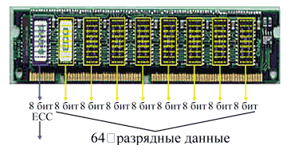
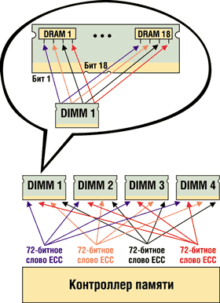
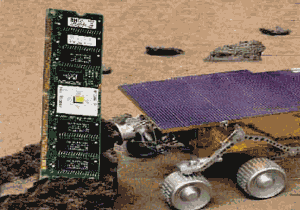

Андрей Борзенко
Для обеспечения приемлемой производительности современным серверам требуются огромные объемы памяти. Одна из причин в том, что быстродействие используемых в серверах микропроцессоров Intel увеличилось по сравнению с началом 1990-х гг. в 20 раз, а быстродействие дисков за то же время возросло всего лишь в 5 раз. Известно также, что по мере дальнейшего увеличения быстродействия микропроцессоров элементы памяти становятся узким местом компьютерных систем. Если частоты микропроцессоров давно превысили частоты системной шины, то шина памяти до самого последнего времени работала синхронно с последней.
Однако использование быстродействующих и дорогих кристаллов памяти для серверов не всегда эффективно с точки зрения баланса стоимости и быстродействия. Для обеспечения удовлетворительной общей производительности систем обычно применяется недорогая память большого объема. Именно это позволяет сгладить разрыв между быстрыми микропроцессорами и медленными дисками. При такой высокой потребности в памяти на серверах заказчики нуждаются в оборудовании более дешевом, но обеспечивающем повышенную надежность.
Себестоимость памяти обычно снижают за счет максимального повышения разрядности микросхем. Плотная упаковка (т. е. повышение разрядности) микросхем памяти позволила резко снизить соотношение цена/емкость. Такие микросхемы передают и получают четыре или восемь разрядов данных в каждой операции доступа.
Напомним, что для микросхем памяти емкость традиционно измеряется в битах, а вот емкость модулей - в байтах (1 Мбайт = 8х1 Мбит). Обозначение 1 Мх4 означает, что данная микросхема может адресовать 1 Мбит ячеек, в каждой из которых может храниться 4 бита информации. Говорят также, что емкость такой микросхемы 4 Мбит. Как правило, емкость микросхем памяти растет с инкрементом четыре. Дело в том, что добавление одной адресной линии увеличивает количество строк (и столбцов) в матрице памяти вдвое, всего же ее размер возрастает вчетверо. Каждый кристалл памяти содержит ячейки, в которых может храниться от одного до шестнадцати разрядов данных. Например, 16-мегабитный кристалл можно сконфигурировать как 4 Mбит x 4, 2 Mбит x 8 или 1 Mбит x 16, но во всех случаях его общая емкость равна 16 Mбит. Число разрядов на ячейку показывает, сколько бит передается одновременно при обращении к ней.
От проверки четности до ECC
Ошибки памяти можно подразделить на аппаратные и случайные. Аппаратные ошибки обычно обусловлены дефектами кремниевого кристалла или монтажных соединений микросхем DRAM и со временем не исчезают. Случайные ошибки (или "мягкие") обычно вызываются заряженными частицами или излучением; они непостоянны и со временем пропадают. Ранее основной причиной случайных ошибок были альфа-частицы, но более строгий контроль качества материала, из которого делаются корпуса микросхем DRAM, позволил производителям практически ликвидировать эту причину сбоев. В настоящее время основной источник случайных ошибок в микросхемах DRAM - электрические возмущения, вызванные космическими лучами - потоками высокоэнергетических элементарных частиц, приходящими из космоса.
В начале 1990-х гг. в большинстве серверов, оборудованных микропроцессорами Intel, применялся метод проверки четности памяти. Он позволяет обнаруживать ошибки, но не исправлять их. Метод контроля по четности широко применялся еще в первых моделях компьютеров для оценки достоверности хранимой в оперативной памяти информации. Состоит он в следующем. При записи байта информации в запоминающее устройство определяется дополнительный контрольный разряд, который вычисляется обычно путем логического сложения всех информационных разрядов (как показано в таблице). Обычно контрольный разряд равен единице, если число единиц в байте было четным, и нулю, если число единиц в группе было нечетным.
Получение контрольного разряда
| Байт информации | Количество единичных разрядов | Значение бита четности | Количество единиц, включая бит четности |
| 00000000 | 0 | 1 | 1 |
| 10110011 | 5 | 0 | 5 |
| 00100100 | 2 | 1 | 3 |
| 11111111 | 8 | 1 | 9 |
Таким образом, при чтении ранее записанного байта, вновь получив контрольный разряд и сравнив его с уже имеющимся, можно оценить достоверность получаемой информации. Если значения хранимого и полученного разрядов совпадают, то данные считаются истинными; в противном случае генерируется сообщение об ошибке четности, которое приводит к остановке компьютера. При возникновении ошибки в самом разряде четности работа системы нарушается и все данные в памяти безвозвратно теряются. Представьте себе, что в памяти сервера находится 32 или даже 64 Mбайт данных, еще не сохраненных на диске. В случае ошибки четности вся эта немалая информация пропадает безвозвратно. А ведь все серверы размещают данные в памяти до того, как сохранить их на диске.
Данный метод контроля имел определенный смысл, пока микросхемы памяти были недостаточно надежными. К тому же, если на каждые восемь информационных разрядов приходится один бит четности, то стоимость модуля тем самым увеличивается более чем на 10%. Значительные технологические успехи в производстве микросхем динамической памяти привели к существенному росту их надежности. Так, у современных микросхем памяти среднее время наработки на отказ определяется годами, а то и десятками лет. Примерно с середины 90-х гг. изготовители модулей памяти стали постепенно отказываться от схемы контроля по четности. Например, популярный набор микросхем Intel Triton (430FX) вообще не поддерживал проверку на четность. Некоторые системные платы для компьютеров хотя и допускали использование SIMM-модулей с контролем четности, но саму проверку могли и не поддерживать. Однако для построения серверов, работающих с критически важной информацией, такой подход был, разумеется, неприемлем.
В предыдущие годы высокая частота ошибок четности памяти вынудила отрасль перейти на новый стандарт и обеспечить поддержку ECC (Error Checking and Correcting - обнаружение и исправление ошибок). Обычно эту особенность называют SEC/DED (Single Error Correction/Double Error Detection - коррекция единичных и обнаружение двойных ошибок). Механизм SEC/DED не позволяет обнаруживать ошибки более чем в двух разрядах. В этом случае целостность информации нарушается. В архитектуре такого типа ошибки в нескольких разрядах неустранимы и приводят к отказу системы, а сбои единичных разрядов исправляются автоматически, незаметно ("прозрачно") для операционной системы и прикладных программ.
Теперь для наиболее ответственных приложений, где цена ошибки очень высока, используются уже не обычные модули с проверкой на четность, а модули с коррекцией ошибок ECC. При обычной проверке на четность невозможно обнаружить, например, возникновение двух ошибок одновременно. Действительно, если в байте информации 00100100 со значением бита четности 1 изменятся значения двух разрядов - 01100000, то бит четности все равно будет равен 1.
Идея, лежащая в основе метода ECC, довольно проста - каждый разряд памяти входит более чем в одну контрольную сумму. Это увеличивает число контрольных разрядов, но дает возможность восстанавливать значение сбойного бита по несовпадающим контрольным суммам. Итак, ECC использует один разряд четности на байт информации для нахождения одиночных ошибок, а для исправления требуется 7 бит для 32- и 8 бит для 64-разрядной памяти. При этом легко обнаруживаются двойные ошибки, как та, что описана выше. Следовательно, для ECC можно использовать обычные модули с контролем четности, если это допускает контроллер памяти. Основной недостаток при такой схеме использования ECC - снижение общей производительности системы, на которую возлагаются дополнительные вычисления.
Другой способ реализации ECC - размещение логики контроля не в контроллере памяти на системной плате, а на самом модуле. Это позволяет избежать снижения производительности, но стоимость таких модулей выше, чем обычных. Поскольку ошибки в большем числе разрядов случались чрезвычайно редко, метод ECC позволил существенно повысить надежность систем. Сегодня технология ECC стала стандартом и применяется практически во всех серверах.
Разрядность данных различна для разных микросхем DRAM. Используемые в настоящее время DIMM-модули (Dual In-line Memory Module) со 168 и 184 контактными выводами (рис. 1) оснащаются микросхемами DRAM с разрядностью данных х4 (4 разряда данных), x8 или x16. Для поддержки 72 разрядов (64 разряда данных и 8 разрядов для кодов исправления ошибок) требуются микросхемы DRAM с более высокой разрядностью, так как на модуле DIMM просто недостаточно места, чтобы решить эту задачу, установив DRAM-микросхемы с меньшей плотностью.
|  | Рис. 1. Модуль памяти DIMM ECC.
|
Недостатки ECC
Безвозвратная потеря данных случается, когда на микросхеме в DIMM-модуле происходит ошибка в нескольких разрядах, - этот сбой механизм ECC устранить не в состоянии. Представьте себе, что за один цикл микросхема обменивается восемью разрядами данных. При возникновении ошибки, не подлежащей исправлению средствами механизма ECC, все восемь разрядов данных теряются, что, в свою очередь, вызывает аварийную остановку сервера. Потеря данных по причине ошибок памяти возможна как в 4-разрядных, так и в 8-разрядных микросхемах: ведь механизм ECC защищает от сбоев только единичных разрядов. По мере уплотнения DRAM-устройств доля многоразрядных ошибок увеличивается. Кроме того, объемы памяти на современных серверах все время растут (устанавливаются большие количества модулей или модули с большим объемом памяти), и вероятность неустранимых ошибок DRAM-памяти - как случайных, так и постоянных, - увеличивается. Таким образом, память стандарта SEC/DED, которая еще недавно обеспечивала вполне удовлетворительные характеристики, теперь не удовлетворяет требованиям высокой надежности, доступности и удобства в эксплуатации (RAS - Reliability, Availability and Serviceability), предъявляемым к современным серверам. Это, в частности, касается серверов масштаба предприятия, стандартные объемы памяти которых ныне превышают несколько гигабайт. Кроме того, следует отметить, что требования к объемам памяти существенно возросли после выпуска 64-разрядных компьютерных систем семейства Itanium.
На современных высокопроизводительных файловых серверах с микропроцессорами Intel такие ошибки в микросхемах памяти могут вызвать разрушение системы и безвозвратную потерю нескольких гигабайт критических данных. В большинстве файл-серверных приложений восстановление данных после такого аварийного отказа практически невозможно. Сбои в памяти также способны привести к существенным простоям приложений серверов баз данных, в которых информация защищается от потери путем записи всех транзакций на диск. Дело в том, что механизму восстановления обычно требуется масса времени на воссоздание базы данных на основании записей журнала транзакций, которые не успели попасть в базу данных. Иногда на это уходит несколько часов работы сервера, на протяжении которых он не способен обслуживать текущие бизнес-операции.
Новый механизм исправления ошибок
Одной из составных частей инициативы X-Architecture корпорации IBM (http://www.ibm.com/ru) стала технология исправления ошибок Chipkill. Она обеспечивает защиту серверов от отказов отдельных микросхем и многоразрядных ошибок в модулях памяти. Эта технология, перенесенная IBM с больших систем, существенно сокращает среднее время простоя серверов и обеспечивает более надежную платформу для клиент-серверных вычислений на базе микропроцессоров Intel. Она призвана повысить надежность систем, доступность и удобство в эксплуатации - ключевые характеристики серверов масштаба предприятия, обслуживающих критически важные приложения. Архитектура Chipkill позволяет системе безболезненно воспринимать ошибки, которые в обычных условиях приводят к неустранимым сбоям, тем самым обеспечивая сохранность данных и высокую доступность системы.
В системах высокой доступности, таких как серверы масштаба предприятия IBM S/390, проблема многоразрядных ошибок памяти DRAM отсутствует благодаря особой архитектуре оперативной памяти. Подсистема памяти сконструирована так, что отказ отдельной микросхемы, независимо от ее разрядности, не затронет более одного разряда в каком-либо из нескольких слов ECC. Например, в 4-разрядной микросхеме DRAM отдельные биты из всей четверки попадают в разные слова ECC, т. е. в разные адресные пространства памяти. Поэтому даже в случае полного отказа микросхемы количество ошибочных разрядов в словах ECC не превысит единицу, а такую ошибку механизм ECC устраняет автоматически. Данная архитектура обеспечивает отказоустойчивость всей подсистемы памяти.
Продуманная конструкция мэйнфреймов защищает их от сбоев микросхем памяти. В каждом модуле памяти разрядность микросхем равна числу разрядов, защищенных механизмом ECC. Нынешние серверы на базе микропроцессоров Intel такого механизма не поддерживают - ведь рынок требует дешевой памяти, вынуждая проектировщиков создавать очень плотные микросхемы памяти, поддерживающие отраслевой стандарт (иными словами, исключительно ECC).
Chipkill - это механизм, позволяющий памяти противостоять многоразрядным ошибкам на отдельных микросхемах DRAM, в том числе сбою всех разрядов данных. В механизме Chipkill есть два основных метода исправления ошибок, причем они могут применяться совместно. Эти методы базируются на определенном наборе микросхем и особой аппаратной архитектуре системы - их поддержку невозможно обеспечить простым обновлением ПО.
В первом методе каждый бит данных модуля памяти размещается в отдельном "слове ECC". (Слово ECC - это набор разрядов данных и контрольных разрядов, в котором обнаружение и исправление ошибок обеспечивается алгоритмом ECC.) Допустим, что разрядность системы памяти составляет 32 байт (или 256 разрядов). Биты ECC добавляются так, чтобы общая ширина блока (и контрольные, и биты данных) составляла 288 разрядов. Четыре слова ECC, каждое из которых состоит из 64 разрядов данных и 8 контрольных разрядов ECC, поддерживают механизм SEC/DED. Эти четыре слова ECC распределяются по DRAM-модулям. Например, если DIMM содержит модули х4 DRAM, четыре бита каждого устройства распределяются по разным словам ECC (рис. 2). Сбой всех четырех битов - это всего лишь четыре единичные ошибки в четырех словах ECC, и они устраняются автоматически. В этом примере механизм Chipkill поддерживается только на DIMM-модулях, состоящих из микросхем х4 DRAM.
|  | Рис. 2. Один из механизмов Chipkill.
|
Второй метод заключается в предоставлении механизму ECC большего числа разрядов для хранения контрольных кодов, чтобы обеспечить исправление не одного, а нескольких разрядов. При этом используются соответствующие математические алгоритмы устранения многоразрядных ошибок при определенном количестве контрольных битов ECC и битов данных. Например, 144-разрядное слово ECC, состоящее из 128 разрядов данных и 16 битов ECC, позволяет исправлять ошибки, охватывающие до 4 разрядов данных. (Для исправления сбоя четырех бит необходимо, чтобы они были смежными, а не располагались случайно.) Соотношение разрядов ECC и разрядов данных такое же, как и в предыдущем примере (16/128 и 8/64), однако более длинное слово ECC позволяет применить более эффективный алгоритм обнаружения и исправления ошибок.
Совместное использование этих двух методов обеспечивает коррекцию по механизму Chipkill на DIMM-модулях с микросхемами х8 DRAM. Два 144-разрядных слова ECC распределяются так, чтобы на каждом DRAM в первом и втором словах ECC исправлялись по 4 разряда. Этот метод обеспечивает поддержку механизма Chipkill при использовании DIMM-модулей, состоящих как из микросхем х4 DRAM, так и из х8 DRAM.
На серверах Netfinity (на смену которым пришли машины eServer xSeries) инженеры IBM решили эту проблему, разместив избыточный массив недорогих микросхем DRAM (Redundant Array of Inexpensive DRAM, RAID) непосредственно на DIMM-модулях. При каждом доступе к памяти RAID-микросхема вычисляет контрольный код ECC для всего набора микросхем и сохраняет результат в резервной памяти на защищаемом DIMM-модуле. В случае отказа одной микросхемы DIMM-модуля сохраненная на RAID-массиве информация применяется для восстановления потерянных данных, обеспечивая бесперебойную работу всего сервера Netfinity. Такая RAID-технология напоминает RAID-механизмы, применяемые для защиты данных в дисковых массивах, и называется Chipkill DRAM.
Специалисты компании IBM разработали заказную специализированную микросхему для Chipkill, которая называется ECC ASIC (Application-Specific Integrated Circuit) и выполняет исправление ошибок без замедления доступа к высокопроизводительной EDO-памяти со временем доступа 50 нс. Таким образом, при установке DIMM-модулей IBM Chipkill на серверы Netfinity, оборудованные процессором Intel Xeon, модификация плат памяти не нужна, а новые модули не вызывают снижения производительности
Результаты исследований показали, что на серверах, оборудованных 32 Мбайт памяти с проверкой четности, частота сбоев памяти за 3 года составила 7 отказов на 100 серверов. На серверах, оборудованных 1 Гбайт памяти с поддержкой ECC, частота сбоев за 3 года равна 9 отказам на 100 серверов. А вот на серверах, оборудованных 4 Гбайт памяти с поддержкой Chipkill, за 3 года число сбоев не превысило 6 отказов на 10 тыс. серверов. Кроме того, оказалось, что частота отказов по причине ошибок памяти на серверах с 1 Гбайт ECC-памяти выше, чем на серверах с 32 Мбайт памяти с проверкой четности. Причина здесь в том, что при том огромном числе DRAM-микросхем емкостью 64 Мбит, которое нужно, чтобы составить 1 Гбайт памяти, вероятность отказа отдельных микросхем существенно выше, чем вероятность возникновения единичных ошибок четности в 32 Мбайт памяти с проверкой четности. Технология IBM Chipkill Memory позволила снизить число отказов серверов Netfinity по причине сбоев подсистемы памяти до невероятно низкого уровня.
Обнаружение и оповещение
Поскольку основная задача механизма Chipkill - исправление ошибок памяти, в нем применяются такие же способы обнаружения и оповещения, что и в ECC. Обнаружение и оповещение Chipkill никак не сказывается на производительности оборудования или ПО - издержки те же, что и для стандартных механизмов ECC. Вкратце остановимся на том, как может выполняться обнаружение постоянных и случайных ошибок и оповещение о них в серверных архитектурах с применением обоих механизмов - ECC и Chipkill.
Обнаружение и исправление ошибок памяти выполняется в системном наборе микросхем. Код исправления ошибок (ECC) генерируется при записи и проверяется при чтении во всех системных операциях с памятью "прозрачно" для прикладных программ. Обнаруженная ошибка автоматически исправляется до передачи данных получателю. При этом событие ошибки регистрируется оборудованием, а системная BIOS уведомляется об исправлении ошибки и о месте, где она произошла. Набор микросхем также ведет учет исправленных ошибок, что позволяет BIOS выявлять DIMM-модули, в которых ошибки возникают и исправляются постоянно. Получив уведомление, система BIOS опрашивает регистры набора микросхем, чтобы определить, где произошла ошибка памяти (порядок такого опроса сильно зависит от конструкции конкретной системы, поэтому он и выполняется на уровне BIOS). Обнаружив модуль DIMM, вызвавший ошибку, BIOS регистрирует эту информацию в системном журнале, который является, например, частью встроенной системы управления сервером (Embedded Server Management). DIMM-модули легко заменить в процессе эксплуатации, для них требуется лишь предсказательное оповещение об ошибках и замене, поэтому нет необходимости локализовать ошибки с точностью до отдельной микросхемы на плате DIMM-модуля. Получая за сравнительно короткое время повторяющиеся сообщения об исправленных ошибках от одного и того же DIMM-модуля, BIOS отключает соответствующий механизм оповещения и регистрирует этот факт в журнале системы управления сервером. Это избавляет систему от дополнительной нагрузки, обусловленной обработкой всех ошибок памяти, поскольку постоянная ошибка DRAM иногда генерирует миллионы сообщений об исправлениях в минуту.
Программное обеспечение управления системой, поставляемое в составе многих серверов, анализирует системный журнал при каждом внесении записи системой BIOS. Ошибки единичных разрядов инициируют уведомления одного из трех возможных уровней: warning ("предупреждение"), critical ("критическая"), nonrecoverable ("неустранимая"). По-настоящему случайная ошибка вряд ли инициирует уведомление в стеке программы управления системой. Однако в случае постоянных неполадок в работе DIMM-модуля инициируется уведомление программе управления системой, после чего та назначает службе технической поддержки задание на замену неисправного DIMM-модуля. Постоянная ошибка, вызвавшая отключение механизма регистрации исправлений, в любом случае инициирует уведомление. Постоянные ошибки в одном разряде или ошибки, устраняемые средствами Chipkill, не вызывают отказа системы; тем не менее они увеличивают вероятность того, что очередная случайная ошибка приведет к критическому, неустранимому сбою. Поэтому администраторы системы должны внимательно следить за уведомлениями о дефектных DIMM-модулях и своевременно назначать службе технической поддержки задания на их замену.
С Марса на Землю
Интересно, что, по некоторым данным, изначально технология Chipkill разрабатывалась IBM для марсианского вездехода Rover (рис. 3), где сбои памяти были, мягко говоря, нежелательны. Агентство NASA применило-таки эту технологию в исследовательском зонде Pathfinder. Надо отдать должное специалистам NASA, которые осознали важность такого параметра, как надежность памяти. Им, видимо, совсем не хотелось потратить миллиарды долларов на отправку Pathfinder на Марс и только потом обнаружить, что все мероприятие терпит крах по причине отказа одной микросхемы памяти.
|  | Рис. 3. Модуль памяти для марсианского вездехода.
|
Технология Chipkill поддерживается в новом универсальном наборе микросхем IBM Summit, который подходит как для 64-разрядных микропроцессоров семейства Itanium, так и для 32-разрядных Xeon. Каждый чипсет будет поддерживать до четырех процессоров, позволяя им разделять такие ресурсы, как шины ввода-вывода и шины памяти. Четыре набора могут связываться воедино, что даст серверам на базе Summit возможность поддерживать до 16 полностью автономных микропроцессоров. Например, в четырехпроцессорном сервере можно будет выделить три кристалла под Windows NT, а один - под Linux, а если все процессоры работают в одной среде, можно будет проводить их "горячую" замену.
В заключение следует отметить, что, по мнению ряда экспертов, те же рыночные силы, которые ранее вынудили перейти от проверки четности к технологии ECC на Intel-серверах с 32 Мбайт памяти, в ближайшее время заставят в обязательном порядке устанавливать память Chipkill на новых серверах Intel-архитектуры, оборудованных многими гигабайтами памяти и 64-разрядными микропроцессорами семейства Itanium. В исторической перспективе это и неудивительно, ведь именно такое магистральное направление намечалось технологиями IBM для больших систем. Если допустить, что мэйнфреймы были предшественниками распределенной, ориентированной на сеть модели клиент-серверных вычислений, то представляется очевидным, что присущая мэйнфреймам надежность и отказоустойчивость скоро потребуется и в серверах, оборудованных микропроцессорами Intel.